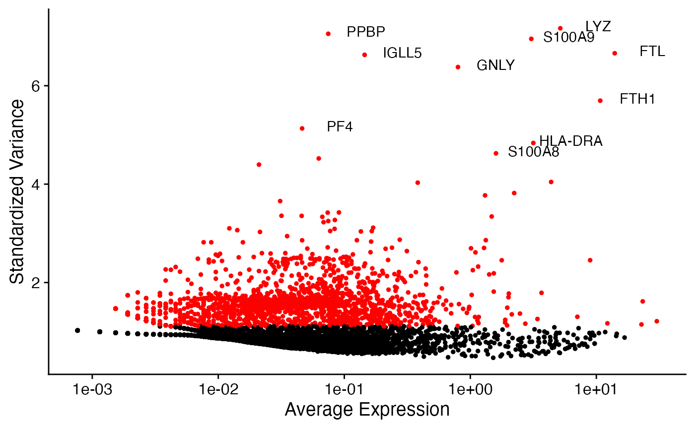
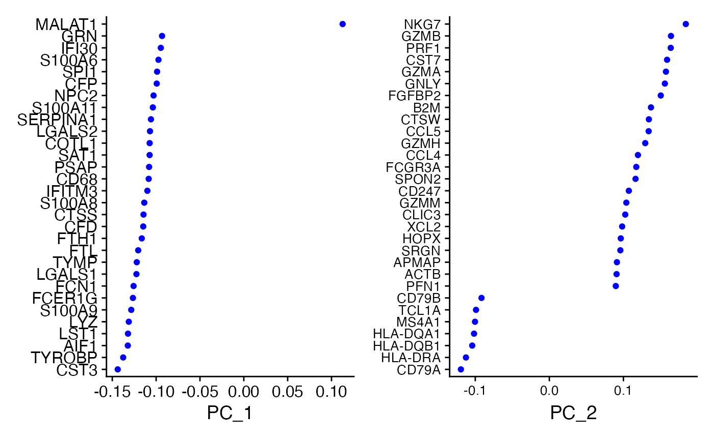
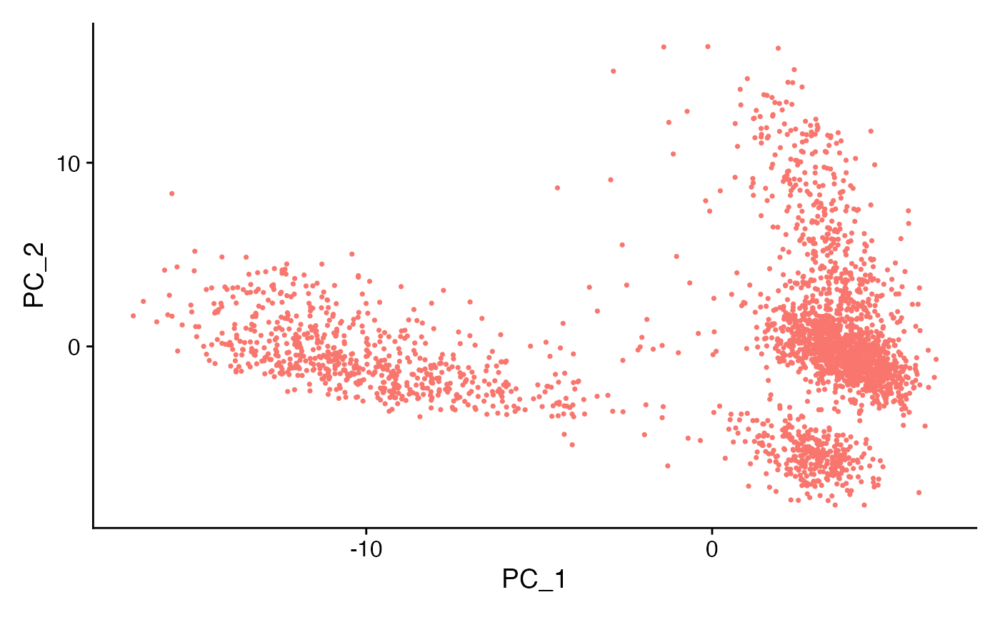
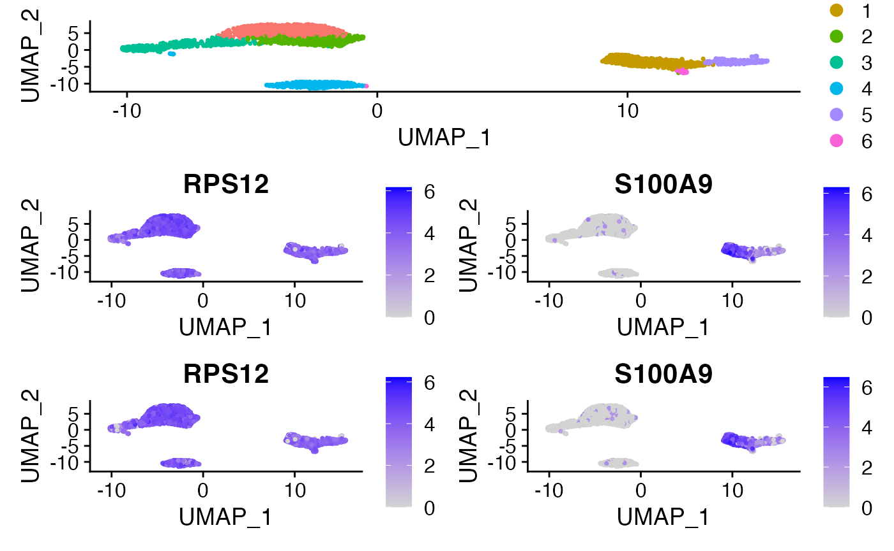
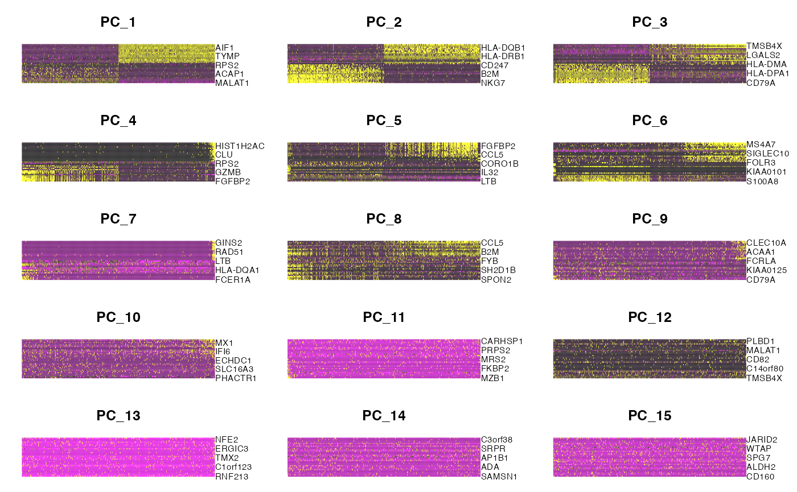

Tutorial: count splitting with seurat
Source:vignettes/vignettes/seurat_tutorial.Rmd
seurat_tutorial.RmdThe purpose of this tutorial is to reproduce the analysis from the Seurat clustering tutorial while using countsplit to avoid the double dipping that was inherent in that tutorial. We use the same data and carry out the same processes as in the Seurat tutorial, but we highlight the steps that should be performed on the training set as opposed to on the test set. We also point out some steps in the pipeline where count splitting could potentially cause confusion. For more information on the Seurat methodology, see the website or papers such as Hao et al. (2021), Stuart et al. (2019), Butler et al. (2018).
Install Seurat
If you don’t already have Seurat, you will need to run:
if (!require("BiocManager", quietly = TRUE))
install.packages("BiocManager")
BiocManager::install("Seurat")Loading the data
We use the same dataset as in the Seurat clustering vignette. For convenience, we included the pbmc dataset raw counts (obtained from 10x genomics) in this package. We just need to load the packages and load the count matrix.
Seurat objects cannot handle gene names that have underscores in them. To avoid issues later in the tutorial (where we will need to use gene names to map between the training and test sets), we run the following code to replace all underscores with dashes in the gene names of the raw counts matrix.
rownames(pbmc.counts) <- sapply(rownames(pbmc.counts), function(u) stringr::str_replace_all(u, "_","-"))Applying count splitting and creating a Seurat object
We now count split to obtain two raw count matrices. This is the only place in this tutorial where we actually use a function from the countsplit package.
set.seed(1)
split <- countsplit(pbmc.counts, epsilon=0.5)
Xtrain <- split$train
Xtest <- split$testWe now must store the training matrix in a Seurat object so that we can apply the preprocessing steps from the Seurat clustering tutorial. As recommended by Seurat, this code will remove any genes that were not expressed in at least 3 cells and will remove any cells that did not have at least 200 expressed genes.
pbmc.train <- CreateSeuratObject(counts = Xtrain, min.cells = 3, min.features = 200)The Seurat tutorial then recommends further subsetting the cells to exclude cells that have unique feature counts over 2,500 or less than 200, and to exclude cells that have >5% mitochondrial counts
pbmc.train[["percent.mt"]] <- PercentageFeatureSet(pbmc.train, pattern = "^MT-")
pbmc.train <- subset(pbmc.train, subset = nFeature_RNA > 200 & nFeature_RNA < 2500 & percent.mt < 5)We note that now the dimensions of Xtrain and Xtest do not match up with the dimensions of our new Seurat object.
dim(Xtrain)## [1] 32738 2700
dim(Xtest)## [1] 32738 2700
dim(pbmc.train)## [1] 12421 2615To avoid any confusion later, we create Xtestsubset, which contains the same genes and the same cells as pbmc.train.
rows <- rownames(pbmc.train)
cols <- colnames(pbmc.train)
Xtestsubset <- Xtest[rows,cols]
dim(Xtestsubset)## [1] 12421 2615Preprocessing workflow
All steps in the preprocessing workflow are performed on pbmc.train.
We take this time to point out some intricacies of the Seurat object that could become confusing in future analyses. A Seurat object has three assays: counts, data, and scale.data. At this point in the analysis, data and counts both store the raw counts, and scale.data is empty.
all.equal(GetAssayData(pbmc.train, "counts"), GetAssayData(pbmc.train, "data"))## [1] TRUE
GetAssayData(pbmc.train, "scale.data")## <0 x 0 matrix>These assays will change as we run further preprocessing steps, and this will be important to keep in mind. We next normalize and compute the set of highly variable features, as in the Seurat tutorial. Note that normalizing changes the data assay of pbmc.train such that it stores normalized data, rather than counts.
pbmc.train <- NormalizeData(pbmc.train)
all.equal(GetAssayData(pbmc.train, "counts"), GetAssayData(pbmc.train, "data"))## [1] "Attributes: < Component \"x\": Mean relative difference: 0.7230153 >"Computing the set of highly variable features does not alter the dimension of the dataset. All features are retained, but these highly variable features are the ones that will be used downstream during dimension reduction.
dim(pbmc.train)## [1] 12421 2615
pbmc.train <- FindVariableFeatures(pbmc.train, selection.method = "vst", nfeatures = 2000)
dim(pbmc.train)## [1] 12421 2615At this point in the Seurat tuorial, they make a plot with the top 10 variable features labeled. Here, we reproduce this plot and show that we identify nearly the same top 10 genes as they did in the Seurat tutorial. This is comforting, as it shows that the training set is retaining a lot of info compared to the full dataset. The overlapping genes are: PPBP, LYZ, FTL, S100A9, S100A8, GNLY, FTH1, IGLL5, PF4. The only difference is that on the training set we selected HLA-DRA instead of GNG11.
library(ggplot2)
top10 <- head(VariableFeatures(pbmc.train), 10)
plot1 <- VariableFeaturePlot(pbmc.train)
plot2 <- LabelPoints(plot = plot1, points = top10)
plot2 + guides(col="none") We continue following the preprocessing steps from the tutorial, and notice that each time we reproduce a plot we have essentially the same results as in the tutorial, despite the fact that we are only using the training data. Besides things like sign flips of principal components and re-labeling of clusters, nearly everything looks the same. For example, the same sets of genes seem to define the first two principal components. We note that ScaleData finally fills in the scale.data assay in the object, and some downstream functions will access this assay.
all.genes <- rownames(pbmc.train)
pbmc.train <- ScaleData(pbmc.train,features = all.genes)
pbmc.train <- RunPCA(pbmc.train, features = VariableFeatures(object = pbmc.train))
VizDimLoadings(pbmc.train, dims = 1:2, reduction = "pca")+theme(axis.text = element_text(size=10))

We skip the next few visualizations from the Seurat tutorial, but we return to the gene expression heatmaps at the end of this vignette. As in the Seurat tutorial, we retain 10 principal components for clustering analysis.
pbmc.train <- FindNeighbors(pbmc.train, dims = 1:10)
pbmc.train <- FindClusters(pbmc.train, resolution=0.5)## Modularity Optimizer version 1.3.0 by Ludo Waltman and Nees Jan van Eck
##
## Number of nodes: 2615
## Number of edges: 95044
##
## Running Louvain algorithm...
## Maximum modularity in 10 random starts: 0.8613
## Number of communities: 7
## Elapsed time: 0 secondsFinally, we visualize the clusters that we have computed. While our plot has some sign flips and relabeling, we seem to basically get the same clusters as in the Seurat tutorial. This shows that using only the training set did not drastically alter the findings.

Finding differentially expressed features manually
Now that we computed clusters from the training set, it is time to look for differentially expressed genes across the clusters. The “safest” way to perform this analysis is to extract the cluster labels from pbmc.train and write our own analysis functions to see how the columns of Xtestsubset (created above) vary across these clusters. This approach is the safest because we know for sure that the clusters were obtained using only the training data and that the analysis uses only the testing data.
First, we extract the clusters and verify that we have a cluster for every cell in Xtestsubset.
## clusters.train
## 0 1 2 3 4 5 6
## 722 466 459 410 352 176 30
length(clusters.train)## [1] 2615
NCOL(Xtestsubset)## [1] 2615Next, we note that the FindMarkers function in Seurat (which is used for differential expression testing) does a wilcox test by default. The first example of differential expression testing in their tutorial compares cluster 2 against all other clusters. From visual inspection, it seems that their cluster 2 matches up well with our cluster 2 (this was just good luck; several other clusters have received different labels). Therefore, we try to reproduce their cluster 2 analysis by hand.
Note that the FindMarkers function acts on the log-Normalized data, and so to reproduce this analysis by hand we must log and normalize the test data.
sf <- colSums(Xtestsubset)
Xtestsubset_norm <- t(apply(Xtestsubset, 1, function(u) u/sf))
Xtestsubset_lognorm <- log(Xtestsubset_norm +1)For computational simplicity, the Seurat tutorial only tests a subset of genes for differential expression. For simplicity, here we test all of the genes.
cluster2 <- clusters.train==2
pvals2 <- apply(Xtestsubset_lognorm, 1, function(u) wilcox.test(u~cluster2)$p.value)
head(sort(pvals2))## LTB IL32 IL7R CD3D HLA-DRA TYROBP
## 1.024995e-69 2.795907e-65 1.555729e-52 1.822045e-52 2.461172e-50 3.652260e-47We identify LTB, IL32, CD3D, IL7R, and LDHB as the top markers of cluster 2, which is exactly the same as in the Seurat tutorial (although the order is slightly different and the p0values are slightly different).
Finding differentially expressed features with Seurat
It would be nice to be able to make a Seurat object containing the training set clusters but the test set counts. This would allow us to use some of Seurat’s nice visualization features for differential expression testing. We note that care should be taken in this section, as we are mixing-and-matching pieces of Seurat objects and Seurat functions not explicitly mentioned in this tutorial may have unexpected behavior.
We first let pbmc.test equal pbmc.train. This ensures that our test set object gets the same cluster information and UMAP information as the training set, such that we can still visualize the training set clusters. We then update the counts assay to store the test set counts. Unfortunately, once we do this, the data and scale.data assays are not automatically updated to store the normalized or scaled counts. We run normalize and scale functions to remedy this.
pbmc.test <- pbmc.train
pbmc.test <- SetAssayData(object = pbmc.test, slot = "counts", new.data = Xtestsubset)
pbmc.test <- NormalizeData(pbmc.test)
pbmc.test <- ScaleData(pbmc.test, features = all.genes)We first verify that the Seurat FindMarkers function returns the same information as the manual differential expression test above. It does!
cluster2.markers <- FindMarkers(pbmc.test, ident.1 = 2, min.pct = 0)
head(sort(pvals2), n=10)## LTB IL32 IL7R CD3D HLA-DRA TYROBP
## 1.024995e-69 2.795907e-65 1.555729e-52 1.822045e-52 2.461172e-50 3.652260e-47
## LDHB HLA-DPB1 HLA-DRB1 CD74
## 6.409036e-45 1.208847e-43 5.578914e-43 3.876074e-39
head(cluster2.markers, n = 10)## p_val avg_log2FC pct.1 pct.2 p_val_adj
## LTB 1.024995e-69 1.2573889 0.904 0.521 1.273146e-65
## IL32 2.795907e-65 1.2014270 0.800 0.363 3.472796e-61
## IL7R 1.555729e-52 1.1410766 0.575 0.213 1.932370e-48
## CD3D 1.822045e-52 0.9193555 0.758 0.327 2.263162e-48
## HLA-DRA 2.461172e-50 -3.3849585 0.205 0.524 3.057022e-46
## TYROBP 3.652260e-47 -3.5375959 0.065 0.404 4.536472e-43
## LDHB 6.409036e-45 0.8943173 0.813 0.439 7.960663e-41
## HLA-DPB1 1.208847e-43 -2.6613164 0.155 0.469 1.501509e-39
## HLA-DRB1 5.578914e-43 -2.5094670 0.107 0.433 6.929570e-39
## CD74 3.876074e-39 -2.3598621 0.595 0.704 4.814471e-35The main reason it is useful to store the test matrix in a Seurat object is that it lets us use many cool visualization features.
Consider the following sets of heatmaps.
This first set of heatmaps is computed using the training counts. All principal components are computed on the training set. Each panel shows a principal component. 500 randomly selected cells are ordered along the principal component on the X-axis. The genes with the top 5 highest loadings are shown on the Y-axis. While the association between the genes and the principal components clearly decreases as we move from PC1 to PC15, PC15 still clearly shows association between the top 5 genes and the PC. This association is due to the fact that the training data itself was used to construct the PCs– and so there will always be some genes that appear to be associated with the PC.
DimHeatmap(pbmc.train, dims = 1:15, cells = 500, balanced = TRUE)
Now instead we still show principal components computed on the training set, but the expression count values inside of the heat map are now test set counts. For the first 10 or so PCs, the association between test set counts and the PC seems almost as strong as the association between the training set counts and the PCs. This suggests that these PCs are measuring true signal in the data. On the other hand, consider the PCs 11-15. The patterns seen in the training set essentially disappear in the top genes plotted for the test set. This suggests that any association seen in the initial heatmaps was simply due to overfitting; these PCs do not measure anything useful or interesting.
DimHeatmap(pbmc.test, dims = 1:15, cells = 500, balanced = TRUE)
This matches insights from the Seurat tutorial (insights obtained using Jackstraw), where they suggested that somewhere between 7-12 PCs would be the right number to keep, and they chose to keep 10. These heatmaps show the utility of count splitting in helping distinguish signal from noise.